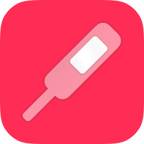
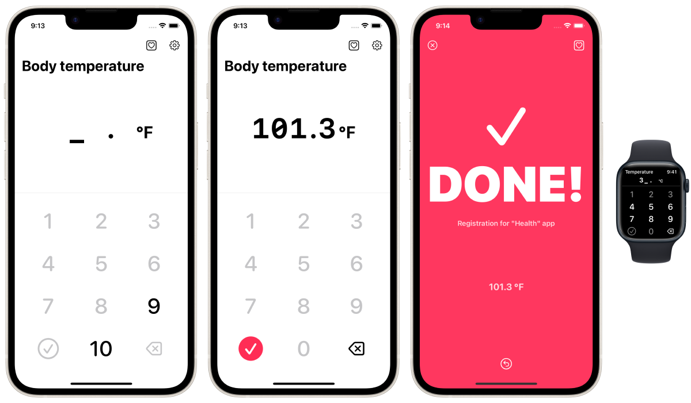

Зарегистрируйте температуру своего тела в приложении Apple "Здравоохранение" как можно быстрее.




Это самый быстрый (ручной) способ регистрации данных о температуре тела в приложении Apple "Health Care", предустановленном на вашем iPhone.
Это приложение не может читать, просматривать или управлять прошлыми данными в приложении 'Health Care'. Это приложение предназначено только для регистрации данных в приложении 'Health Care'. Пожалуйста, проверьте зарегистрированные данные в приложении 'Health Care'.
Люди часто измеряют температуру своего тела (и базальную температуру тела) ежедневно с помощью термометра. Многие пользователи iPhone регистрируют данные о своей температуре (или базальной температуре тела) в приложении "Здравоохранение".
Лучшим решением является использование "умного" термометра, который работает с приложением Health Care и автоматически сохраняет результаты измерений, но они могут быть дорогими и недоступными. Данные также можно регистрировать вручную в приложении "Health Care", но, к сожалению, приложение "Health Care" не предназначено для регулярной ручной регистрации данных измерений. Поэтому ручной ввод данных, которые постоянно происходят ежедневно, например, измерение температуры тела, может отнимать много времени и вызывать стресс.
Это приложение было разработано для решения подобных проблем.
Бесплатно
Скрыть рекламу (160 иен)